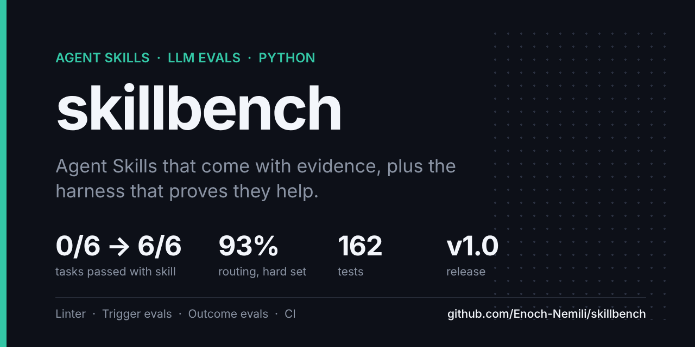

A Vision for Semantic Resource Elasticity in Autonomic Cyber-Physical Edge Systems
Co-author. A vision paper on adapting edge computation to what a scene actually requires.
Washington, DC
Software Engineer
I am a software engineer with more than three years of industry experience, currently completing an MS in Computer Science at George Washington University (expected December 2027). My work focuses on retrieval and LLM systems, evaluation, and the backend and data infrastructure that supports them.

Each project is open source, with continuous integration, a tagged release, and a measured result.

Four Agent Skills for AI infrastructure work, together with the harness that evaluates them: a SKILL.md linter that agrees with the reference validator, trigger evaluations (does the agent load the right skill?) and outcome evaluations (does the work improve?). The same model answers each task with and without the skill, and the graders run the code. Every decision rule is fixed before the run, and rejected changes are reported as well.

An MCP server that gives Claude a searchable, citable library of research papers. Hybrid search combines pgvector with Postgres full-text search through Reciprocal Rank Fusion, tuned on a labeled 36-question evaluation. Includes bearer-token authentication, a multi-stage Docker image, and fixes for two production bugs found through testing.

Traffic-incident detection from CCTV using a cascade that runs from inexpensive to expensive models. YOLOv11 and ByteTrack process every frame, motion signals flag anomalies, and a vision-LLM writes a typed incident report only when something appears wrong. Evaluated on the TAD benchmark of real accident footage.

An end-to-end recommender built on real clickstream data: Spark pipelines with a leakage-free time split, a LightGBM ranker exported to ONNX and served from Java and Spring Boot over Redis, Kafka streaming features, FAISS retrieval and Elasticsearch search, monitored with Prometheus and Grafana.

Multi-agent code review for GitHub pull requests. Logic, style and security agents run in parallel on LangGraph and return schema-validated findings. An orchestrator removes duplicates and produces a single prioritized report that can be posted back to the pull request.
Each figure comes from an evaluation, benchmark or load test in one of the repositories above. Hover over a mark to see its value.
skillbench · outcome evaluations · gemini-3.5-flash-lite, 3 trials
The same model answers two tasks per skill, three times each, with and without the skill. The debugging tasks are graded by running the code. A skill counts as helping only under a rule fixed before the run.
PaperMind · retrieval evaluation
36 labeled questions. Hybrid search at w=0.5 was selected by a decision rule set before the run.
RecSys · load test at ~90 req/s
50 concurrent users with Locust and no failed requests.
Publications
Co-author. A vision paper on adapting edge computation to what a scene actually requires.
Co-author.
Education
George Washington University, Washington, DC
Jawaharlal Nehru Technological University, Hyderabad. CGPA 8.14/10, First Class with Distinction.
I am seeking full-time software engineering roles in AI infrastructure, backend and data systems. The best way to reach me is by email.